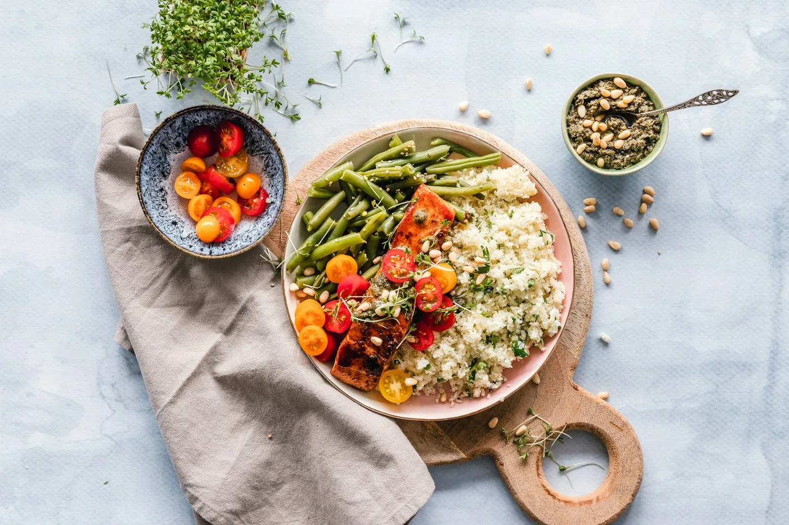

Api sebagai bahasa.
Bara memberi rasa yang tidak sepenuhnya dapat diulang. Kami menyukai ruang kecil bagi kejutan itu—diimbangi teknik, disiplin, dan pencatatan yang teliti.
Menu ditulis untuk berbagi cerita bahan, bukan memamerkan teknik. Rasa harus tetap terasa dekat.
Filosofi Kami